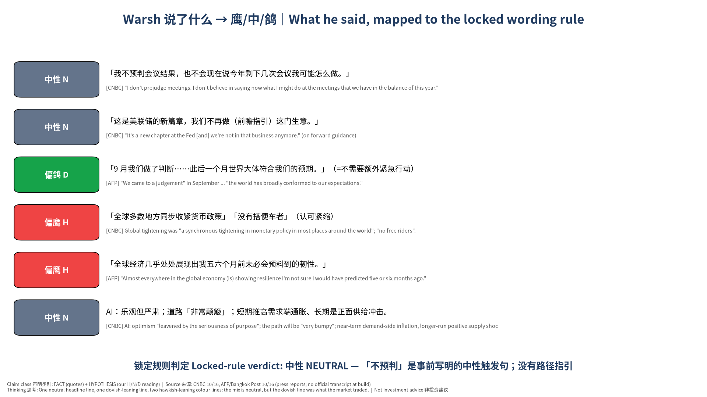
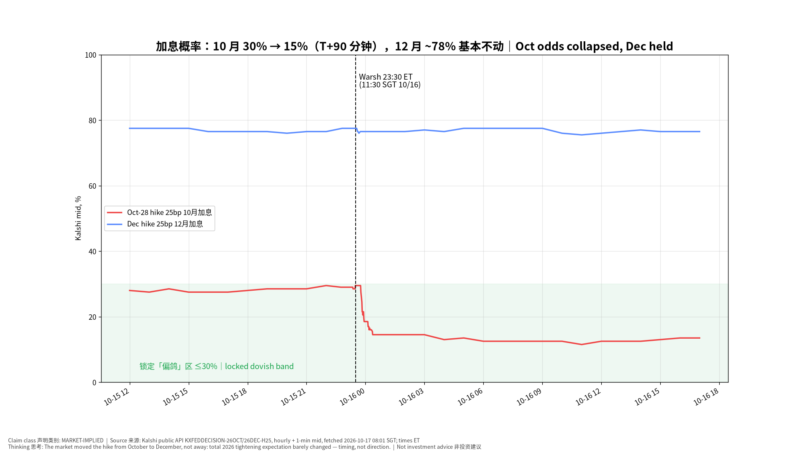
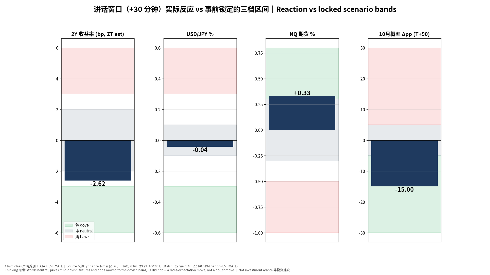
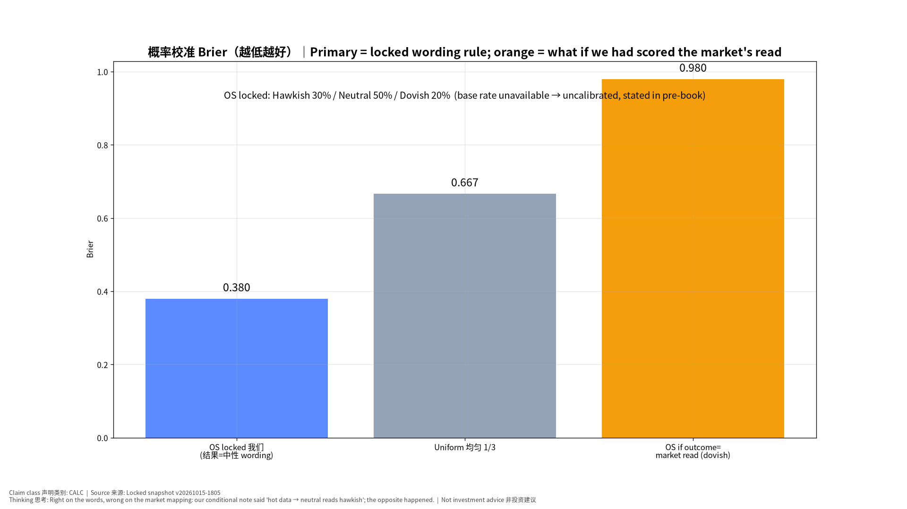
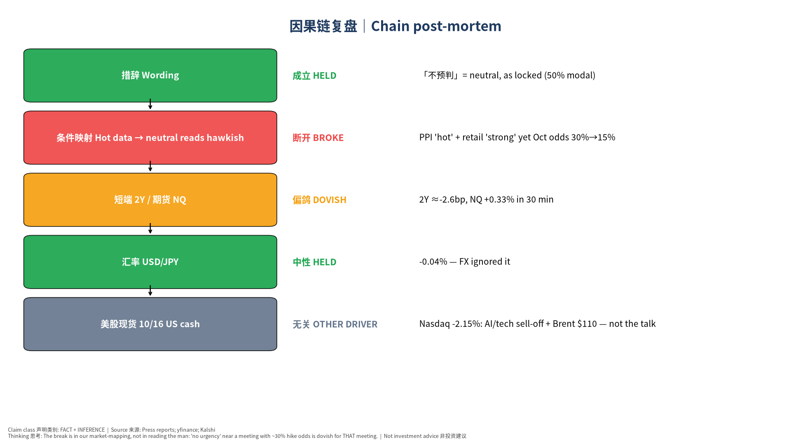

版本 v20261017-0801-post｜生成 2026-10-17 08:01 SGT｜基于锁定事前书 v20261015-1805（完整性校验通过，未改写）｜事件：2026-10-16 11:30 SGT（10/15 23:30 ET）｜CONFIRMED｜非投资建议 Not investment advice 说明：本书比讲话晚约 44 小时——讲话在新加坡上午，不在「美股早盘即时复盘」的时间窗内，日报补做。官方逐字稿未发布，引语来自 CNBC、法新社/曼谷邮报报道（二手，已注明）。
⏱ 30秒看懂
🗺 阅读地图
| 你有多少时间 | 读哪里 |
|---|---|
| 2 分钟 | ⏱30秒 + 图2（加息概率路径） |
| 10 分钟 | 加读 §1 说了什么、§2 市场反应、§4 我们错在哪 |
| 30 分钟 | 全读，含 §5 对估值的影响、§6 对立观点、§8–10 来源/假设/模型来源、自我测验 |
层级说明：L1 故事（人人能懂）→ L2 关键数字（带解释）→ L3 专业细节（网页可折叠，默认收起）。
| 原话（中文意译） | 来源 | 我们的读法 HYPOTHESIS |
|---|---|---|
| 「我不预判会议结果，也不会现在说今年剩下几次会议我可能怎么做。」 | CNBC | 中性 |
| 「这是美联储的新篇章，我们不再做（前瞻指引）这门生意。」 | CNBC | 中性 |
| 「9 月我们做了判断……此后一个月世界大体符合我们的预期。」（=不需要额外紧急行动） | AFP | 偏鸽 |
| 「全球多数地方同步收紧货币政策」「没有搭便车者」（认可紧缩） | CNBC | 偏鹰 |
| 「全球经济几乎处处展现出我五六个月前未必会预料到的韧性。」 | AFP | 偏鹰 |
| AI：乐观但严肃；道路「非常颠簸」；短期推高需求端通胀、长期是正面供给冲击。 | CNBC | 中性 |
同场与市场解读（MARKET/THIRD-PARTY）： - Goldman Sachs (Hatzius) note via CNBC: Warsh’s comments, alongside other FOMC participants, “indicate that the FOMC is set to pause in October”; still expects a second and final hike in December.（CNBC） - CME FedWatch 72.3% probability of no change at Oct 27–28 (CNBC, updated 10/16 08:36 ET).（CNBC） - IMF MD Georgieva (same day): central banks should be “laser focused on price stability”; IMF supports the recent tightening by the Fed, ECB and BOJ; US/German/Japanese 10Y yields recently at highest since 2002/2009/1996.（IMF）
锁定规则判定：中性 NEUTRAL。 Opening quote is the locked neutral trigger (「不预判」) and no path guidance was given; no ‘not falling clearly/fast enough’ (hawk trigger) and no look-through-energy (dove trigger) language reported.

📊 怎么看这张图
| 合约 | 讲话前 23:29 ET | 00:00 ET | 01:00 ET | 10/16 16:00 ET | 最新 |
|---|---|---|---|---|---|
| 10/28 会议加息 25bp | 0.295 | 0.185 | 0.14500000000000002 | 0.135 | 0.13 |
| 12 月会议加息 25bp | 0.775 | 0.765 | 0.76 |
10 月「维持利率」合约最新 0.87（≈87%）；CME FedWatch 同日 72.3% 维持（CNBC 10/16 08:36 ET）。两个来源一致：10 月暂停成为主流。

📊 怎么看这张图
| 资产（2Y 为 bp 估算，其余 %） | +15 分钟 | +30 分钟 | +60 分钟 | +4 小时 |
|---|---|---|---|---|
| ZT=F | -1.01 | -2.62 | -1.61 | -2.82 |
| JPY=X | +0.00 | -0.04 | -0.06 | -0.03 |
| NQ=F | +0.09 | +0.33 | +0.25 | +0.20 |
| ES=F | +0.05 | +0.17 | +0.15 | +0.10 |
| DX-Y.NYB | -0.01 | -0.15 | -0.11 | -0.21 |
| GC=F | +0.02 | +0.31 | +0.21 | +0.44 |
| CL=F | -0.08 | -0.19 | -0.08 | +0.04 |
| 变量（对照锁定区间） | 落在哪档 |
|---|---|
| Oct odds 10月概率 (level after) | dovish |
| 2Y (bp, +30m) | neutral |
| USD/JPY (% , +30m) | neutral |
| NQ fut (% , +30m) | dovish |

📊 怎么看这张图
| 标的 | 10/15 收盘 | 10/16 收盘 | 变化（%；TNX 为 bp；VIX 为点） |
|---|---|---|---|
| ^GSPC | 7744.06005859375 | 7659.43994140625 | -1.09 |
| ^IXIC | 26713.029296875 | 26140.033203125 | -2.15 |
| ^NDX | 29935.599609375 | 29187.548828125 | -2.50 |
| ^SOX | 11581.2099609375 | 11137.287109375 | -3.83 |
| ^DJI | 52177.69140625 | 52002.41015625 | -0.34 |
| ^VIX | 16.459999084472656 | 19.989999771118164 | +3.53 |
| ^TNX | 5.089000225067139 | 5.0980000495910645 | +0.90 |
| CL=F | 97.97000122070312 | 99.04000091552734 | +1.09 |
| BZ=F | 105.91999816894531 | 109.69000244140625 | +3.56 |
| JPY=X | 157.95700073242188 | 157.98699951171875 | +0.02 |
| NVDA | 217.22999572753906 | — | — |
| AMD | 562.22998046875 | — | — |
| CRWV | 69.69000244140625 | — | — |
| TSLA | 362.44000244140625 | — | — |
| MU | 931.239990234375 | — | — |
| TSM | 422.25 | — | — |
报道（AP / Yahoo Finance 10/16）：标普 −1.1% 收 7,659.44，纳指 −2.1% 收 26,140.03，道指 −0.34%；全周纳指 −4.5%、标普 −1.95%，为 6 月下旬以来最差一周；布伦特原油盘中触及 110 美元（5 月以来首次，霍尔木兹海峡局势升级）；CoreWeave 因债务担忧再度承压。标题驱动 vs 基本面：讲话造成的是「利率预期」小幅鸽派移动；当晚股价下跌的主角是 AI 交易去拥挤 + 油价，两者方向相反——这正是要分开看的原因。

📊 怎么看这张图

📊 怎么看这张图
根因（INFERENCE）： 1. 离会议只剩 12 天、概率约 30% 时，「不急」本身就是信息。 不做前瞻指引的主席不会主动给鹰派信号；没有鹰派信号 → 押 10 月加息的人平仓。我们把「沉默」当成了「默许」。 2. 「世界大体符合我们 9 月的预期」= 9 月的路径还有效——而 9 月路径是「12 月再加一次」，不是「10 月」。这句话我们事前没有列入词典。 3. 其他 FOMC 官员近期讲话（高盛报告提及）已在铺垫 10 月暂停；我们的事前书没有汇总其他官员的言论（盲点）。 4. 「认可全球同步紧缩」听起来偏鹰，但它说的是过去，市场交易的是下一次会议。
模型修正（Model Recalibration）： - 新增观察区候选（Observation Zone — Candidate）：「无前瞻指引型主席，在会前 ≤2 周、加息概率 20–45% 时的中性措辞 → 该会议概率向暂停衰减」。需 ≥3 个样本再升级为规则。 - 央行讲话事前书增加：①其他官员近 2 周言论汇总；②「回顾上次决策是否仍成立」类措辞的鸽/鹰词典条目。 - 不改写事前概率；不因一次结果调整基础概率（本事件无可靠基础概率）。
我们的观点：讲话中性，市场的鸽派解读是对「沉默」的合理定价，10 月大概率暂停。
对立观点最强版本： 1. 他明确认可全球同步紧缩、说经济「有韧性」——这是鹰派底色，市场低估了 10 月加息的可能。 2. 9 月 CPI 3.7%、PPI 偏热，数据依赖的主席面对热数据，不表态恰恰是为加息留后路。 3. Kalshi 夜间流动性薄，亚洲时段的移动可能被少数交易者放大。
| 证据 | 支持我们 | 支持对立 | 权重 |
|---|---|---|---|
| Kalshi 10 月概率 30%→13% 且持续到收盘 | ✔ | 高 | |
| CME FedWatch 72.3% 维持（独立来源） | ✔ | 高 | |
| 高盛：10 月暂停、12 月再加 | ✔ | 中 | |
| 「韧性」「同步紧缩」原话 | ✔ | 中 | |
| 9 月 CPI/PPI 偏热 | ✔ | 中 | |
| 日元未动 | ✔ | 低 |
裁判：证据偏向我们：两个独立的市场价格来源 + 卖方解读一致，且移动持续一整天而非夜盘噪音。但对立观点的第 2 点仍有效——10/27 前若数据继续偏热，10 月加息概率可能回升，这是本结论的主要风险。
| 内容 | 来源 | 类别 | 时间 |
|---|---|---|---|
| 讲话引语（不预判、新篇章、同步紧缩、AI 颠簸） | CNBC | FACT（报道） | 2026-10-16 |
| 讲话引语（韧性、世界符合预期） | AFP / Bangkok Post | FACT（报道） | 2026-10-16 |
| 讲话要点 | WSJ、AP | FACT（报道） | 2026-10-16 |
| Georgieva 全会讲话 | IMF | FACT（一手） | 2026-10-16 |
| 高盛解读、CME FedWatch 72.3% | CNBC | MARKET / THIRD-PARTY | 2026-10-16 08:36 ET |
| 10/16 美股收盘与周度表现、油价 | AP、Yahoo Finance | FACT（报道） | 2026-10-16 |
| Kalshi 合约路径 | api.elections.kalshi.com 公共 API | MARKET-IMPLIED | 2026-10-17 08:01 SGT |
| 期货/外汇 1 分钟、日收盘 | yfinance | DATA | 2026-10-17 08:01 SGT |
| 事前预期 | 锁定事前书 v20261015-1805 | HYPOTHESIS | 2026-10-15T18:05:53.902945+08:00 |
| # | 假设 | 类型 | 如何检验 / 失效 |
|---|---|---|---|
| 1 | 报道引语准确代表讲话 | ASSUMPTION | 官方逐字稿/视频发布后核对 |
| 2 | 2Y ≈ −ΔZT ÷ 0.0194/bp | ESTIMATE | 与现货 2Y 相差 >3bp 时以现货为准 |
| 3 | Kalshi 中间价 ≈ 市场概率 | ASSUMPTION | 价差 >5c 或成交稀薄时不可靠 |
| 4 | 10 月概率下降主要由讲话引起 | INFERENCE | 若同一小时有其他官员/数据消息则失效 |
| 5 | 10/16 美股下跌与讲话无关 | INFERENCE | 若 2Y 当日大涨则需重新归因 |
构建脚本 pipeline/build_warsh_post.py；事前快照
v20261015-1805（只读）；Excel
含实时公式（措辞判定计数、Brier、窗口变化、Kalshi
变化）；规则：锁定事前书 §0/§3 措辞规则与区间。
✅ 自我测验 Check your understanding
答案：因为离会议只有 12 天、概率约 30%：押加息的人需要主席「点头」才能坚持；他不点头且说「世界符合 9 月预期」（9 月路径是 12 月加息），所以他们平仓，概率从 30% 掉到 15% 左右。
答案：市场不是认为 Fed 变鸽了，而是把加息从 10 月挪到 12 月——时间点变了，方向没变。
答案：不能。讲话在 12 小时前、方向是利率预期偏鸽（对股票偏利好）；当晚的下跌来自 AI/科技抛售与布伦特 110 美元。把两件事混在一起就是「标题驱动」错误。
✍ 事后作业：打开 Excel「Calibration」表，把 Outcome 从 neutral 改成 dovish，看我们的 Brier 怎么变；再想一想：如果事前你会怎么给概率？
我们说「市场读成偏鸽」——但如果 10/28 真的加息，那今天的「推迟」只是市场的错误，我们的措辞判断和条件映射反而是对的。所以本书的「市场映射误差」结论要等 FOMC 之后才算最终确认；在那之前，它是 INFERENCE，不是事实。